PSNR (dB) Comparison of Experimental Results:
1. Image Inpainting
2. Image Deblurring
3. Image Compressive Sensing Recovery
Image Restoration from Partial Random Samples| Input 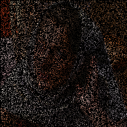Ground Truth
|
Barbara in the case of Ratio=20% |
HSR (28.83 dB) SKR (21.92 dB) NLTV (23.46 dB) |
SAIST (29.68 dB) BPFA (25. 70 dB) Proposed (31.32 dB) |
|---|
| Input 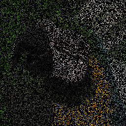Ground Truth
|
Parrots in the case of Ratio=20% |
HSR (28.63 dB) SKR (28.79 dB) NLTV (27.58 dB) |
SAIST (29.41 dB) BPFA (27.63 dB) Proposed (29.83 dB) |
|---|
| Input 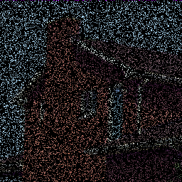Ground Truth
|
House in the case of Ratio=20% |
HSR (32.35 dB) SKR (30.40 dB) NLTV (31.19 dB) |
SAIST (35.73 dB) BPFA (30.89 dB) Proposed (35.61 dB) |
|---|
Text Removal
| Input 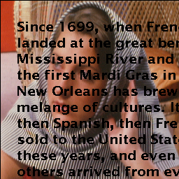Ground Truth
|
Barbara |
HSR (38.86 dB) SKR (30.81 dB) NLTV (32.60 dB) |
SAIST (39.00 dB) 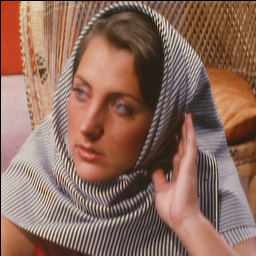BPFA (34.28 dB) Proposed (40.86 dB) |
|---|
| Input 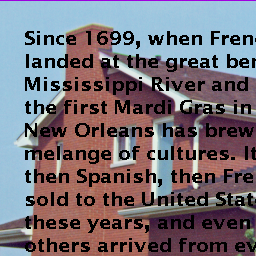Ground Truth
|
House |
HSR (38.65 dB) SKR (38.65 dB) NLTV (38.44 dB) |
SAIST (41.20 dB) BPFA (39.01 dB) Proposed (42.51 dB) |
|---|

2. Image Deblurring
| Input Ground Truth
|
Bike Uniform Kernel: 9x9 with sigma=0.5 |
TVMM (26.51 dB) L0_ABS (26.78 dB)
|
IDDBM3D (28.45 dB) NCSR (27.92 dB) Proposed (28.61 dB) |
|---|
| Input 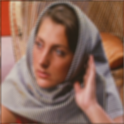Ground Truth
|
Barbara Gaussian Kernel: fspecial('Gaussian', [7 7], 8) with sigma=0.5 |
TVMM (27.79 dB) L0_ABS (28.39 dB)
|
IDDBM3D (31.73 dB) NCSR (30.37 dB) Proposed (33.52 dB) |
|---|


| Input 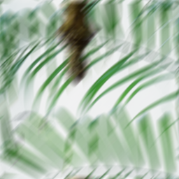Ground Truth
|
Leaves Motion Kernel: fspecial('motion', 20, 45) with sigma=0.5 |
TVMM (30.60 dB) L0_ABS (29.44 dB)
|
IDDBM3D (34.40 dB) 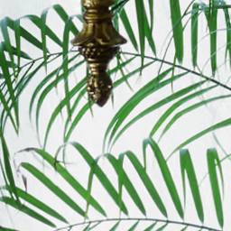NCSR (34.23 dB) Proposed (34.54 dB) |
|---|
| Input 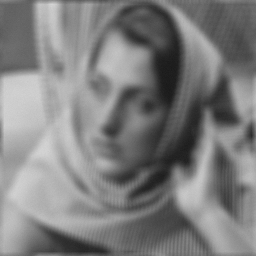Ground Truth
|
Barbara (256x256) Uniform Kernel: 9x9 with sigma=sqrt(2) |
TVMM (26.00 dB) L0_ABS (26.41 dB)
|
IDDBM3D (27.98 dB) NCSR (28.10 dB) Proposed (28.95 dB) |
|---|
| Input 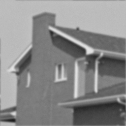Ground Truth
|
House (256x256) Gaussian Kernel: fspecial('Gaussian', 25, 1.6) with sigma=sqrt(2) |
TVMM (33.01 dB) L0_ABS (33.07 dB)
|
IDDBM3D (34.08 dB) NCSR (33.63 dB) Proposed (34.45 dB) |
|---|

Table 1: Six Typical Deblurring Experiments
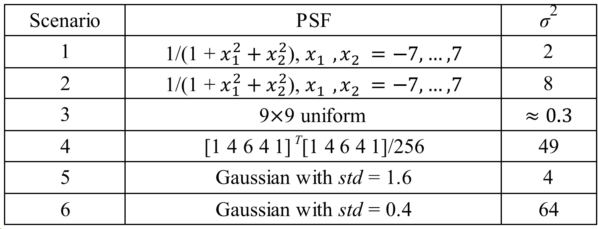
All the six typical experiments achieved by GSR can be downloaded here: Download
| Input Ground Truth |
Barbara (512x512) (Scenario 2 in Table 1) |
TVMM (ISNR=1.33 dB) NCSR (ISNR=3.64 dB) |
IDDBM3D (ISNR=3.96 dB) Proposed (ISNR=4.80 dB) |
|---|

{kind=link}
3. Image Compressive Sensing Recovery
Ground Truth |
Barbara (in the case of CS Ratio=0.2) |
DWT (23.96 dB) MH (31.09 dB) |
TV (23.79 dB) CoS (26.60 dB) Proposed (34.59 dB) |
|---|
Ground Truth |
Vessels (in the case of CS Ratio=0.2) 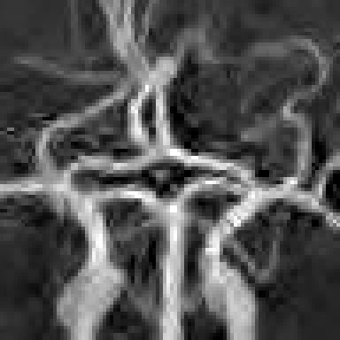 |
DWT (21.14 dB) MH (24.95 dB) |
TV (22.04 dB) CoS (26.71 dB) 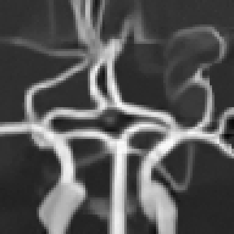Proposed (31.58 dB) |
|---|